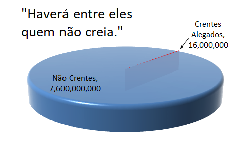

1 Em verdade
vos digo que vos dou um sinal, a fim de que saibais a hora em que
estas coisas estarão prestes a suceder — quando, de sua longa dispersão,
reunirei meu povo, ó casa de Israel, e estabelecerei novamente no meio deles
minha Sião.
2 E eis que
isto é o que vos darei por sinal — pois em verdade vos digo que quando
estas coisas que vos declaro e que declararei daqui por diante, por mim mesmo
e pelo poder do Espírito Santo que vos será dado pelo Pai, forem
levadas ao conhecimento dos gentios para que tenham conhecimento deste
povo, que é um remanescente da casa de Jacó, e deste meu povo, que será
disperso por eles;
3 Em verdade,
em verdade vos digo que quando estas coisas chegarem ao seu
conhecimento, pelo Pai, e vierem do Pai para vós, por intermédio deles;
4 Pois é
sabedoria do Pai que eles se estabeleçam nesta terra como
um povo livre, pelo poder do Pai, para que estas coisas cheguem por
meio deles a um remanescente de vossa posteridade, a fim de que se cumpra
o convênio que o Pai fez com seu povo, ó casa de Israel;
5 Portanto,
quando estas obras e as obras que se irão realizar de agora em diante entre
vós forem transmitidas pelos gentios a vossa semente, a qual
degenerará na incredulidade, por causa da iniquidade;
6 Pois assim
convém ao Pai que isso seja transmitido pelos gentios, a fim de que ele
mostre seu poder aos gentios, para que os gentios, caso não endureçam o
coração, arrependam-se e venham a mim e sejam batizados em meu nome e
conheçam os verdadeiros pontos de minha doutrina, a fim de que
sejam contados com meu povo, ó casa de Israel;
7 E quando
estas coisas acontecerem e tua semente começar a conhecer estas
coisas, será um sinal para eles, a fim de que saibam que a obra do Pai já
começou, para que se cumpra o convênio feito com o povo que é da casa de
Israel.
8 E quando esse
dia chegar, acontecerá que reis fecharão a boca, pois verão o que não lhes
fora contado e considerarão o que não tinham ouvido.
9 Porque naquele
dia, por amor a mim, fará o Pai uma obra que será grande e
maravilhosa no meio deles; e haverá entre eles quem nela não creia,
embora um homem lha declare.
“Haverá entre eles
quem nela [na obra grande e maravilhosa] não creia.”
Enquanto escrevo isso
(Setembro 2019), existem 210 milhões de pessoas no Brasil e 1,4 milhões delas
são Mórmons. Há cerca de um Mórmon para cada 150 Brasileiros. Portanto, a
porcentagem da população do Brasil que não acredita e que está “entre eles” é
de 99,3%. Mesmo nos Estados Unidos (onde a Igreja é a mais forte), a Igreja afirma que apenas 2% da população é mórmon. E em todo o mundo, 99,8% não acredita (veja a figura abaixo).
Figura: Entre eles em todo o mundo

E, na realidade, o
número de pessoas que acreditam nas alegações SUD é realmente menor que os
números que a Igreja reivindica em seus registros de membros, portanto, as
porcentagens são mais severas do que as porcentagens listadas acima. Por
exemplo, o Censo Demográfico 2010
conta apenas 226.509 membros SUD no Brasil (Características gerais da população, religião e pessoas com deficiência, Tabela 1.4.1). Ao mesmo tempo, a Igreja SUD
reivindicou 1.138.740 membros no Brasil (The Oxford Handbook of Latin American Christianity, Table 22.2 e Salt Lake Tribune, ambos apenas em inglês). Então parece que há apenas 20% dos
Mórmons no Brasil que a Igreja reivindica.
10 Mas eis que
a vida do meu servo estará em minha mão; portanto, não lhe farão mal, ainda
que seja desfigurado por causa deles. Não obstante, curá-lo-ei,
pois mostrar-lhes-ei que minha sabedoria é maior que a astúcia do
diabo.
Obviamente, isso é
sobre Joseph Smith, então não sei como alguém reconciliaria essa idéia de
Deus não deixar que eles fazer mal a Joseph com o que aconteceu para Joseph. Ele
foi ferido em muitas ocasiões e depois foi assassinado.
11 Portanto,
acontecerá que todo aquele que não crer em minhas palavras — eu que sou
Jesus Cristo — as quais o Pai fará com que ele leve aos
gentios e dar-lhe-á poder para levá-las aos gentios (o que será feito
segundo o que disse Moisés), será afastado do seio de meu povo, que
é do convênio.
12 E meu povo,
que é um remanescente de Jacó, estará entre os gentios, sim, no meio deles,
como um leão entre os animais da floresta, como um filho
de leão entre os rebanhos de ovelhas que, se passa no
meio, pisa-as e despedaça-as e ninguém as pode livrar.
3 Né 21:12 -15
Então, esse remanescente é presumivelmente os lamanitas que são a maioria dos
nativos americanos ou estão entre os nativos americanos, dependendo se você
leu a Introdução do Livro de Mórmon antes de 2006 ou a versão depois de 2006.
De acordo com estes versículos esse remanescente destruirá os gentios por não
crer. Apesar de pelo menos 98% da população não acreditar no evangelho SUD
(veja a anotação para versículo 9), a destruição foi em grande parte trazida
ao remanescente, independentemente da definição do remanescente.
13 Sua mão será
levantada contra os seus adversários e todos os seus inimigos serão mortos.
Anotação para 3 Né 21:12-15
acima
14 Sim, ai dos
gentios, caso não se arrependam; porque acontecerá naquele dia, diz o
Pai, que eu tirarei teus cavalos do meio de ti e destruirei teus carros;
Anotação para 3 Né
21:12-15 acima
Observe também as
palavras “carros” (implicariam rodas para transporte das quais esses
americanos nada sabiam na época) e “cavalos.” Estas referências são
anacrônicas para a época.
15 E arrasarei
as cidades de tua terra e derrubarei todas as tuas fortalezas;
Anotação para 3 Né 21:12-15
acima
16 E exterminarei
de tua terra as feitiçarias e não terás mais adivinhos;
A Igreja SUD agora
admite que Joseph Smith usou uma pedra num chapéu para procurar tesouros
enterrados (prática supersticiosa como feitiçarias), a mesma pedra que eles
admitem que ele usou para "traduzir" o Livro de Mórmon
(A Tradução do Livro de Mórmon).
17 Tuas imagens
gravadas eu também extirparei; e tuas estátuas tirarei do meio de ti e
não mais adorarás a obra de tuas mãos;
18 E arrancarei
os teus bosques do meio de ti; e assim destruirei as tuas cidades.
19 E acontecerá
que todas as mentiras e embustes e invejas e discórdias e artimanhas
sacerdotais e libertinagens terminarão.
O MormonLeaks
forneceu a documentação de que, a partir de janeiro de 2014, o subsídio de
base concedido às autoridades gerais de LDS era de US $ 120.000 por ano
20 Porque
acontecerá, diz o Pai, que nesse dia todo aquele que não se arrepender e não
vier ao meu Filho Amado, eu o tirarei do meio de meu povo, ó casa de Israel!
21 E executarei
minha vingança e exercerei meu furor sobre eles, assim como sobre os pagãos,
de um modo como nunca ouviram.
22 Mas caso se
arrependam e deem ouvidos às minhas palavras, e não endureçam o seu coração,
entre eles estabelecerei a minha igreja, e eles farão parte do
convênio e serão contados com este, o remanescente de Jacó, a quem
dei esta terra como herança.
23 E ajudarão
meu povo, o remanescente de Jacó, e também quantos vierem da casa de Israel,
a construir uma cidade que será chamada Nova Jerusalém.
24 E então
ajudarão meu povo, que está disperso por toda a face da terra, a coligar-se
na Nova Jerusalém.
25 E então
o poder dos céus descerá no meio deles; e eu também estarei no
meio.
26 E nesse dia
começará a obra do Pai, quando este evangelho for pregado aos remanescentes
deste povo. Em verdade vos digo que nesse dia a obra do
Pai começará entre todos os dispersos de meu povo, sim, mesmo
nas tribos perdidas que o Pai tirou de Jerusalém.
27 Sim, a obra
será iniciada entre todos os dispersos de meu povo; e o Pai
preparará o caminho que todos deverão trilhar para virem a mim, a fim de que
invoquem o Pai em meu nome.
28 Sim, e então
a obra será iniciada e o Pai, em todas as nações, preparará o caminho pelo
qual seu povo possa voltar à terra de sua herança.
29 E sairão de
todas as nações; e não sairão apressados nem fugindo, porque eu
irei à frente deles, diz o Pai, e serei sua retaguarda.